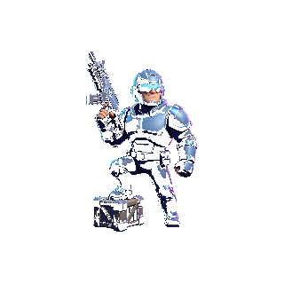
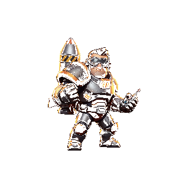
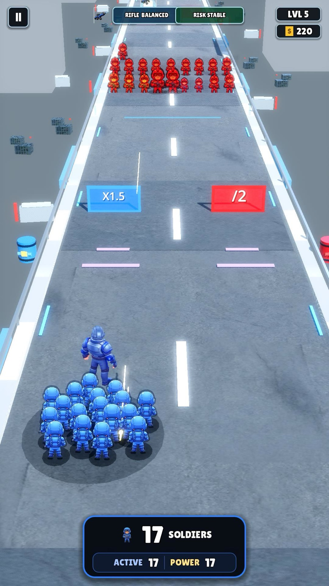
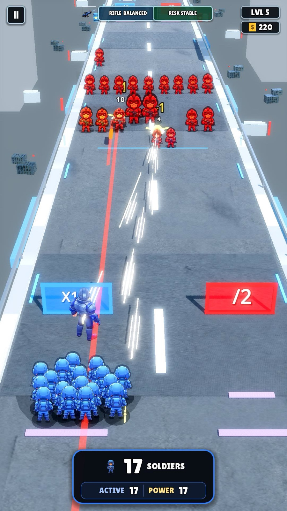
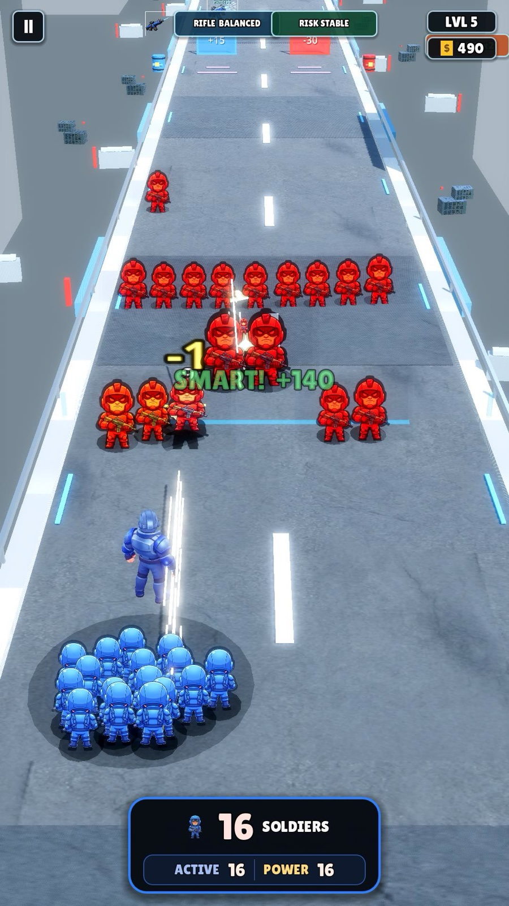

Hero-led runs
Pick Commander, Archer, or Rocketeer before the route. Each run starts with a clear role and a readable squad identity.
Prototype in active QA for iPhone and iPad
MathWar turns arithmetic into route decisions: choose gates, grow or lose soldiers, survive pressure waves, and see every answer change the run immediately.


After choosing a hero, the current build moves into arithmetic gates, squad growth, pressure waves, and readable combat lanes.



A short-session arithmetic runner where the math is not hidden in a worksheet. It is the route, the risk, and the result.
Pick Commander, Archer, or Rocketeer before the route. Each run starts with a clear role and a readable squad identity.
Oversized gate labels, strong blue/red decisions, and portrait-first framing keep the arithmetic legible on phones and iPads.
Routes get harder with more gates, waves, weapon choices, and final encounters while the good path stays winnable without becoming automatic.
The prototype is being validated through internal TestFlight QA. The public site now reflects the newer art, hero selection, and combat readability pass.
New icon, hero cards, arcade soldiers, brighter route props, and stronger combat screenshots are now represented here.
Available through the MathWar Internal QA TestFlight group.
In development. Support, privacy, and terms pages remain available while the playable loop continues to improve.
MathWar is built around repetition, feedback, and visible cause-and-effect. The player should understand what happened, not just watch numbers fly away.
Fast addition, subtraction, multiplication, and division decisions give repeated practice without making the player stare at static drills.
Players learn that a bigger number is not always the smartest route when timing, enemy waves, and later choices matter.
No public chat, no account system, and no claim of curriculum replacement. It is focused arithmetic practice in game form.